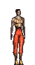

Anarchy Online Bulletin Board > Future Anarchy > Suggestions > Mainly Profession Balance! PRIORITY ONE!
Anarchy Online Bulletin Board > Future Anarchy > Suggestions > Mainly Profession Balance! PRIORITY ONE! Last Thread Next Thread Last Thread Next Thread  |
| Author | Thread |
| Maseren Leet Registered: Nov 2001 | THis message I posted as a reply to one message prteviously, but I decided to expand upon things and put it in here! It is Important! Profession Balance HAS to be your highest priority Funcom. Don't get so involved in the story that you forget that. Look at UO, they understood the importance of balance. They worked hard on removing all bugs, and making sure that skills worked well. Yes some things needed tweaking, but never as much as on here. Professions need improvement! NTs, make them the artillery they need to be. Doctors, give them SOME fighting prowess, they will never be a PvP class, but allow them to be able to fight mobs well. MPs, WEAKEN them.. or if not, weaken, because I NEVEr believe anything needs to be taken away, without giving anything back. Nerfing is never a good idea. So if you dont' weaken, fix others to match. Adventurers, help them become a bit more that they are. Anyways, please read my post below for more. Everyone, please support this, we need to puish the balance of things in the game: Professions, economy, organizations and others... We can only do so if we are constructive however. So no flaming on this post please. It doesn't help all of us. OK Hi there... I won't lie to you and say I know all, and do all... but you removed our range... fine, you say we can't get that back, at least anytime in the soon future. Thats fine too... but I am spotting a great weakness in the supposed improvements you did to NTs. ISSUE 1: NT's are supposed to be the Nukers/Artillery... Am I wrong? That was my initiatial understanding. FACT: If you calculate things over time, you come to a very basic conclusion, we do NOT do the most damage. A level 50 MA, can do almost 100-120 damage per one attack, and he attacks pretty fast. In 5 seconds, perhaps 4 with AGG at maximu, I can do 300 NO MORE. So, an MA just beat me out on things. FACT: It CAN be fixed, and pretty easily. Make our Nanos more powerful, reduce casting time or increase reacharge time. truthfully, I believe the best oen would be increasing the power of our nanos, as the other two again make us use nano much faster, therefore again weakening us, and bringing us around in a vicious circle. ISSUE 2: The new patch was to introduce many things that would benefit us in the long run, and was supposed to balanace our profession compared to others? FACT: Things are not balanced as things stand. An MP can solo The temple North of Tir, in Greater Tir. His twin pets, and soon to be THIRD pet are bring them so far beyond being balanced its not even funny anymore. FACT: The changed you introduced are impossibilities. Finding any of those nanos is near impossible. i luckILY found one yesterday, and I refuse to spend what precious time I have in life, playing a game and SEARCHING for nano formulas. Why not just make our lives easier, and make them available in shops, perhaps for a higher cost. At least in GETTING the credits, I feel like I am working towards something, as I hate the feeling of accomplishing nothing. ISSUE 3: Just so that you know, I am not only partial to NTs. I feel a LOT for Doctors and poor Adventurers. FACT: Twin pistols is a very very weak skill. This HAS to be fixed. Adventurers can hardly solo anything these days. FACT: DOCTORS.. oh poor doctors. Has anyone besides me noticed they are very very rare these days! Cosmik, CZ, you need to move on this... doctors are entirely far far too weak. Yes they can heal themselves which is excellent, and possibly could me on a one on one battle, since for every 300 I hit them for, they heal for 300, but with mobs, they are VERY weak. Ok, enough from me, but basically there are many simple ways to improve NTs. Make us the artillery we are meant to be. We where supposed to be wizards, make us them. Weaken our health even, I couldn't care less! Implants are there fvor a reason, but make us damagers... we are meant to be so! Teams refuse me entry these days because what value add am I?? NADA. I am a weak NT, byu the time i throw my 10 seconds 400-1000 which most of the time ends up doing minimum damage since its a team attacked monster and its powerful, the fight is over. Please fix us this way. we don't ask for much, just balance the professions. Priorities thatg you should deal with: - Fix Critical Bugs: crashes, dangerous exploits not simple ones, etc... - Balance Professions, lay your groundwork. Don't see every profession individually! see them as a whole, that is very important. Work mostly on balancing things for P vs Mobs as that is more important than PvP for MANY people. - Fix Non-Critical Bugs - Improve organizations... At least introduce an organization sort, that will put members in one list, and adds them instantly. Its important for me to know which ones of my clan are online etc... Anyways, I've deviated a lot, but basically the storyline can WAIT... work hardest on making the game the game it was meant to be, the vision YOU saw. Anyways, thats all I ask... I hope this message does not fall on unlistening ears. Madren The Eye... it seeeees. |
 December 10th, 2001 13:45 December 10th, 2001 13:45 | #1 |
| Cloudeh Supa Leet  Registered: Nov 2001 | FOR THE LAST TIME......and let me make it clear. DOCTORS Are not a fighting class, they are support, heal and weak. If you want to Fight Be a Enf or MA, or Soldier |
| December 10th, 2001 15:12 | #2 |
| XtroXtreme Supa Leet  Registered: Nov 2001 | Wrong, docs are a getting masacred class, as all MOBs aggro you even if you have not had time to use your first heal yet. I think at least Funcom should let us be a healer class. Now we are just nbr one punshing bag. |
| December 12th, 2001 23:22 | #3 |
| Seraphim Supa Leet  Registered: Nov 2001 | U say NT sux, i guess u dont really have a clue how to play Nt then, u see, NT is still good and the only thing that has been nerfed is the same thing that agent got nerfed in early july, ie range nerf, did u stand up and scream for us, nah i guess so not, so shut up. Doctors is supposed to be support class what i react is that they get aggroed while healing, thats wierd and should be taken away, i dont agree they should get better weapon/fire power that is on soldier/enforcer task list. Soldier/enforcer, do they need love, well, heck no, you have been so endorced in love drugs that its enought , soldier class live upon MK shield and that shield so so powerfule and effective that if u cant use it properly then u soldier should go and try to learn som essential team play tactic, i have seen 3 soldier teams gang up tremendously well using aggro spell+Mk and they switch perfect the tank position and kill the mobs efficient. Enforcer? Dunno, i dont think they shall be fixed until they fix that bug devi that gives them 1000+ in initiative, which is cheating on high lvl. That is a class i feel so little for, they have excellent nanons, and tremendous good weapons and super in many aspects. Crat and engineer, i dont know much about these classes but i have friends and i am trynig a new char, and they sem to rock at least at lower level, at least engineer. How about the Agen class? Well, please FC, delete FP, end this madness, i suggest Fixer should have FP, that seems to me more logical. Give agent what they should be able, be undercover and assassin, this mean be able to kill where normally people cant, be able to sneak this mean the conceal must get a new interpretation, like tab for cycle thorught nearby enemy shall contain tag the enemy when succed aa perception vs conceal check. further, we should be able to change side and alter politcial zone value to be able to act as assassin, i dont ask for much , i ask for something that gives agent what they supposed to have, with this i can live with this suxxor AS and no FP. NT? Well, give them larger range , i partly agree, if you shall decrease the range at least lower the attack time, but better damage, heck no, never ever! You have gorgeous damage as it is, you outdamage us agent ten.fold it feels sometimes, well not exactly but i made a check with Ranee ql 188, sometimes, but very seldom i could outmatch but normal they were like 2x more damage!!!! Last edited by Seraphim on December 13th, 2001 at 17:16 |
| December 13th, 2001 00:17 | #4 |
| Morphex Agent Professional  Registered: Nov 2001 | Can't agree more Balance should be priority number one now... FunCom should sit down and think hard on this issue  |
| December 13th, 2001 16:46 | #5 |
| cson Supa Leet  Registered: Nov 2001 | MAs are only good at low levels. The max attrack/recharge for a fist is 1.0/1.0. At lvl 50, it's 1.0/1.0. At lvl 200, it's still 1.0/1.0. As for any weapons wielding, whether it be Melee or Ranged, the attack/recharge improves as your Melee Init or Ranged Init increases. So at higher levels, I'll hit for 109 every two seconds, while an agent or a soldier will hit for 40-2000 every two seconds. So this "MAs hit fast consistently" is only true at low levels. |
| December 13th, 2001 16:53 | #6 |
| Dealingdeath Leetas Registered: Dec 2001 | All I have to say is this: NO MORE NERFS EVER!!!!!!!!!!!!!!! |
| December 13th, 2001 17:10 | #7 |
| Axist Eleet Registered: Nov 2001 | build, not destroy i think funcom should build more up the game than focus on how work out overequipers. Build the other professions up around them. I like the many possible ways to think out how to use that gun u just got. As it is for doc, i cant understand why they do this aggro. Im a doc. I entered a mission with ha ful team, and there was as ususal 3 mobs in first room. With Agg/Def bar on the def side, i buffed away a heal on the puller that got some damage, and BLAM all 3 mobs was on me, and i had to escape out. When i came in again, they continue to target me. Alltho this is not happening all the time this extreme, but i would say, i get aggro often, even with a enforcer and my agg/def on def. I just dont get that this really is intended by Funcom... why? |
| December 13th, 2001 17:33 | #8 |
| Whiterrabbit ReelBigFish  Registered: Nov 2001 | to the original poster i think you should have named this thread "make NTs and docs uber: priority one" but thats my opinion, whats yours? oh. hold on, i know your opinion. edit. stop nerfing, start boosting please. |
| December 13th, 2001 18:02 | #9 |
| Kizzim Leetas  Registered: Nov 2001 | Re: Sigh quote:WTF are you talking about? Do you know what a agent does in RL? They assume the identity of someone to collect information sometimes even kill people. FIXERS HAVE FALSE PROFESSION? they are thugs, smugglers, they hide in the shadows and try to make money. AS is being worked on, you cant expect a attack that does 5000 points of damage at lvl 50. As far as killing people on both sides, thats the beauty of neutral alignment (which i beleive the restriction on them not starting fights should be removed). Im sorry, you obviously dont know what your talking about and more or less you need a slap in the face and a cold bucket of water thrown on to wake you up from your warped dream. |
| December 13th, 2001 22:35 | #10 |
| Seraphim Supa Leet Registered: Nov 2001 | Re: Re: Sigh quote:What do you know what agent do on Rubika in "RL" or wait should i read it what agent do in RL literally? If we should apply RL concept the game would fall apart into pieces. I pushed deliberately on the concepts since FC doesnt realize that agent sux, and is it is now, its worse than adventurer and i already feel sorry for them. FP could stay with agent but i truly dont understand what the hell it help us with undercover / assassin, apart adventurer form for mission, but thats all. Agent is like what people say all classes in one, the guy who can FIX almost anything in nano line so i get Q like "hit me with automatic target please", or "hit me with vulnerable seeker", or "hit me with essence" or "hit me with Grid runner" or "can u hit me with masteries", or "please cant u hit me with wrangler". So then i thought little about Fixers role, it lies somewhere between Trader/Agent, so why shall people run to me like i were some fixer of their problem, hell no, i would be glad if lost FP. I lack undercover nanos, to change prof appearance, name etc ( there is games there u can do this, when using this it changes name for a period , u get a random name from a list ie ). I want better assassin nano, especially one thing, better high lvl buff on aimshot/crit, Take the shot is pathetic almost 50 ncu for almost nothing than another ql 80 LLS? Overall picture Kizzim u are pretty ignorant person, i dont wanna say you are dumb, but please read the post more carefule and ask some question if something seems unclear. Last edited by Seraphim on December 14th, 2001 at 15:07 |
| December 14th, 2001 14:14 | #11 |
| Seraphim Supa Leet Registered: Nov 2001 | Well thats easy guys, False profession is FALSE appearance, ie no knowledge about their nano line but only change profession title. A fixer fit better to this current FP design than agent, that was my headline and i dont wanna loose FP entirely, i would like to have that false appearance but without nano skills. What false appearance? 1) change face ( Graft , nice nano *thumbs up* ) 2) change profession title ( 1 NANO in same fashion as Graft but u toggle around throught a list ) 3) name change ( but remember u cant affect the name itself its random name for a list which consist of taken names players cant be mixed up with) 4) allegiance change Well if anyone have any thought of this please feel free add your comments. Last edited by Seraphim on December 14th, 2001 at 14:40 |
| December 14th, 2001 14:36 | #12 |
| Dealingdeath Leetas Registered: Dec 2001 | Re: Why my remark upon FP? quote:I have to say I disagree with this but its fine if thats your style just don't push it on the rest of us. Personally for the me the fun factor and viability of my character would be ruined if agents lose FP. Count me as gone if they nerf FP for agents and I definitely will not reroll. NERF THE WHINERS - STOP NERF MADNESS |
| December 14th, 2001 19:23 | #13 |
| Seraphim Supa Leet Registered: Nov 2001 | Re: Re: Why my remark upon FP? quote:As a friend and agent players said, " i am tired, we agent sux, today when we are in group people can say right in front of us 'we need damage dealers we have NONE in the group', i feel just like another guy that buff other and tank for die quickly". This is the sad truth about agent, we sux and the only damn thing people is asking for is the please buff me , buff me, buff me! I am tired on this crap FC. I respect your opinion tho apart from one aspect, "NERF" the whiners what 'macho' attitude is that? Seriously, i dont propose anything that would hurt us very much, FP aint a unique feature, what is needed is a more unique features for all classes so everybody feels they are wanted in a group as it is now, agent/adventurer/crat is the least wanted class in teams, well crat is getting better now but how better i dont know. I am soon loosing my respect for FC ... |
| December 15th, 2001 00:30 | #14 |
| Rederon Eleet  Registered: Dec 2001 | Umm Cson MA's can decrease recharge time. It's called Physical Initiative. |
| December 17th, 2001 15:59 | #15 |
| Talanie Supa Leet  Registered: Nov 2001 | Fakewin Hey Fakewin, I partly agree with your stance on this, I just wanted to point out a small thing. Agents can only cast FP once every 30 minutes. This prevents the agent or anyone else from getting all the best buffs. (i.e. SG, MK shields, masteries, wrangles, essence, etc. etc.) |
| December 17th, 2001 16:46 | #16 |
| The saved copy (Funcom's forum archive, saved by the Wayback Machine in 2025) |
All times are GMT.